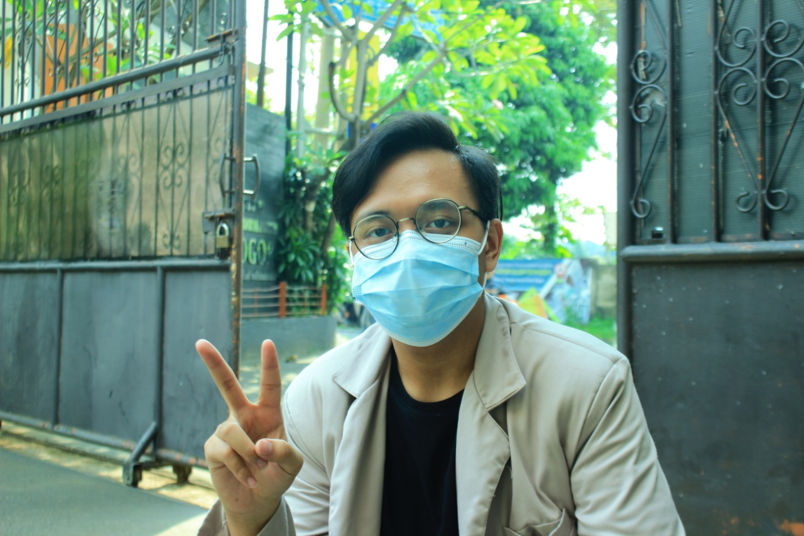

Selama pandemi yang terjadi pada saat ini, yaitu pandemi Covid-19. Dengan semakin menyebarnya pandemi ini, banyak aktivitas masyarakat yang terkena akibatnya. Salah satunya adalah kegiatan belajar mengajar. Di masa pandemi ini, kegiatan belajar mengajar yang biasanya dilakukan secara tatap muka digantikan dengan pembelajaran secara daring. Semenjak diberlakukannya masa darurat Covid-19, hampir seluruh proses pembelajaran di Indonesia tidak diadakan offline dan mengambil kebijakan untuk pembelajaran via daring atau dengan pembelajaran jarak jauh. Dengan adanya pembelajaran online ini membantu guru dan siswa untuk sama-sama belajar untuk memanfaatkan teknologi sebagai media edukasi. Dalam melaksanakan pembelajaran daring dengan berbagai keterbatasan kemampuan, sarana dan prasarana berupa handphone, laptop dan jaringan bagi guru dan peserta didik serta kemampuan yang masih terbatas dalam pemanfaatan teknologi membuat pelaksanaan pembelajaran daring harus tetap diusahakan berjalan agar proses pembelajaran tidak terganggu.
Terdapat banyak sekali kendala dalam pembelajaran jarak jauh (PJJ) yang saya alami, terkadang terjadi perubahan dalam jadwal pelajaran yang mendadak, yang menyebabkan waktu istirahat kami terpakai. Selain itu, pembelajaran jarak jauh ini, membuat saya merasa kurang fit dikarenakan terlalu banyak menghabiskan waktu di satu tempat untuk mengerjakan tugas dan juga untuk beristirahat. Meski begitu, ada sisi positif dari pembelajaran jarak jauh ini, yaitu saya banyak mempelajari hal yang belum bisa saya lakukan saat sekolah offline, seperti menjadi bisa menghabiskan banyak waktu untuk berkumpul bersama dengan keluarga

| Nama | : | Ridho Aththusi Maulidan |
| Tempat/Tanggal Lahir | : | Bogor, 5 Mei 2004 |
| Umur | : | 16 Tahun |
| Alamat | : | Town House cimanggu residence Blok C36 Jalan Perdana Raya, budi Agung, Bogor |
| Agama | : | Islam |
| Jenis Kelamin | : | Laki-Laki |
| Asal Sekolah | : | SMK-SMAK Bogor |
| Hobi | : | Bermain Game |
| Cita-Cita | : | Pilot |